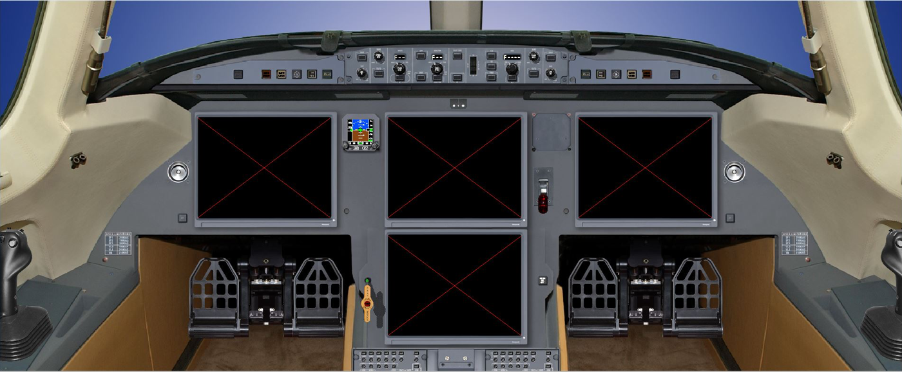
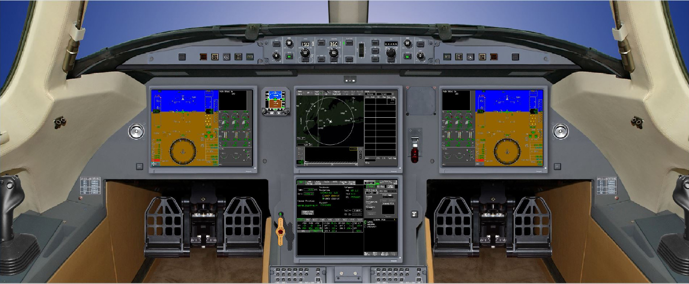

{% extends 'base.html' %}
{% load staticfiles %}

{% block content %}
    <div id="cockpit">
        
        

    <map name="Map" id="Map">
        <area id="leftCockpit" href="images/cockpitTopLeft.jpg" data-toggle="lightbox" data-title="Primary Flight Display (PFD) 1" data-footer="PFD 1 : The PFD presents conventional airplane attitude indications, flight director commands and deviation from localizer and glide slope for the Captain.  In addition, there is an airspeed tape on the left side, an altitude tape and vertical speed indicator on the right side, a partial compass rose at the bottom, and flight mode annunciations at the top.  Takeoff V speeds, REF speed, minimum and limit speeds, radio altitude and MDA and DH indications can also be displayed.  TCAS RA pitch commands are also displayed on the PFD" alt="" title=""  shape="poly" coords="307,182,514,183,512,340,305,340" />
        <area id="rightCockpit" href="images/cockpitTopRight.jpg" data-toggle="lightbox" data-title="Primary Flight Display (PFD) 2" data-footer="PFD 2 :  The PFD presents conventional airplane attitude indications, flight director commands and deviation from localizer and glide slope for the First Officer.  In addition, there is an airspeed tape on the left side, an altitude tape and vertical speed indicator on the right side, a partial compass rose at the bottom, and flight mode annunciations at the top.  Takeoff V speeds, REF speed, minimum and limit speeds, radio altitude and MDA and DH indications can also be displayed.  TCAS RA pitch commands are also displayed on the PFD." alt="" title=""  shape="poly" coords="898,182,1103,182,1104,339,895,341" />
        <area id="topcockpit" href="images/Charts1iNavScreenUpperMDU.png" data-toggle="lightbox" data-title="The Navigation Display (ND)" data-footer="ND : The ND provides information about lateral situation.  It can show compass rose or only an arc of the compass rose depending on which mode the pilot selects on the EFIS panel.  Available modes are ILS, VOR, NAV, ARC and PLAN.  On the ND, you will also see your lateral flightplan as well as additional points like NDBs, VORs, Airports and more.  This all can be selected as well via any PFD display." alt="" title=""  shape="poly" coords="603,183,809,182,809,341,599,342" />
        <area id="bottomcockpit" href="images/system_config.png" data-toggle="lightbox" data-title="Engine Indication and Crew Alerting (EICAS) System" data-footer="The EICAS provides the crew information about the engines, control surfaces and all major aircraft systems.  The EICAS system also provides the crew with alerting system messages that are posted on the EICAS displays in the form of warning, caution, advisory and status messages." alt="" title=""  shape="poly" coords="602,362,807,361,809,525,606,524" />
    </map>

        <div class="power">Power</div>
    </div>
{% endblock %}